地政学
慶州は首都ではありませんが、新羅の王都として朝鮮半島南東部の記憶を支えます。浦項、蔚山、大邱へ近く、港湾、工業、原子力、観光を結ぶ広域圏の中で、文化遺産が地域外交の資源にもなります。今も続きます。
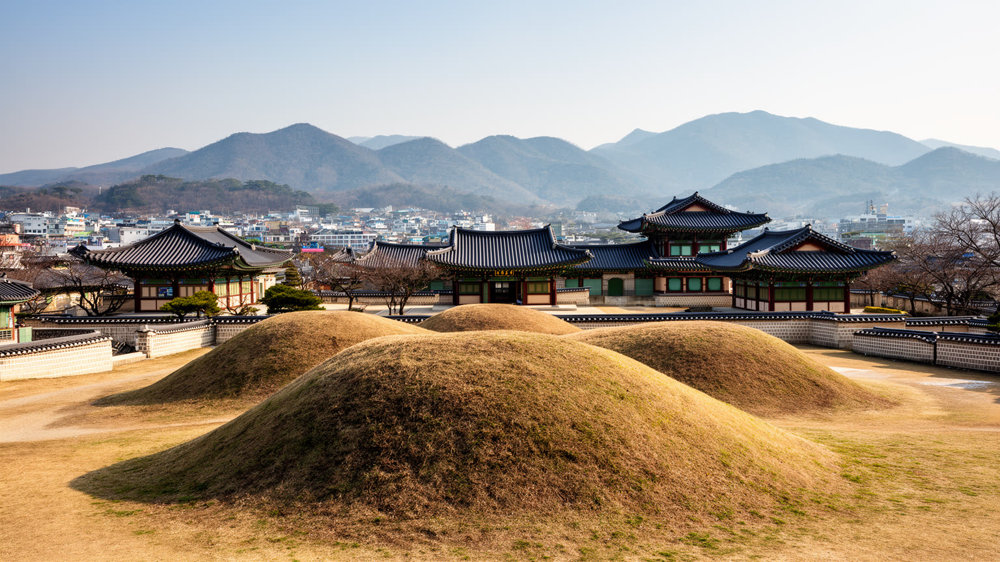
🇰🇷 韓国 / アジア / World City Atlas
新羅王都の記憶、仏教遺産、古墳群、漢屋の路地、観光経済、原子力・自動車部品産業が重なる韓国南東部の歴史都市です。遺産と日常の距離から慶州を読みます。
都市の骨格
慶州は広い行政区域の中に、古代王都の中心、仏教寺院、東海岸、農村、工業団地、大学、観光地区を抱えます。都市を読む鍵は、遺産を保存する静けさと、住民が働き暮らす日常の近さにあります。
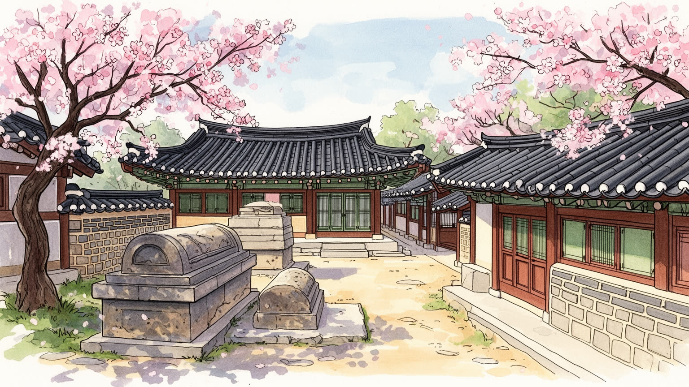
慶州は首都ではありませんが、新羅の王都として朝鮮半島南東部の記憶を支えます。浦項、蔚山、大邱へ近く、港湾、工業、原子力、観光を結ぶ広域圏の中で、文化遺産が地域外交の資源にもなります。今も続きます。
観光と文化財管理の印象が強い一方、農水産、自動車部品、原子力関連、教育、宿泊、飲食、清掃、交通の仕事が都市を支えます。季節で変わる観光労働と工業団地の勤務が同じ生活圏で動きます。働く人も多いです。
仏国寺、石窟庵、南山の仏跡、王陵祭祀、儒教的な村落秩序が重なります。仏教は観光名所である前に、修行、供養、地域の記憶を保つ実践で、遺産の保存と信仰の現在が同じ場所に残ります。今も祈りが静かに続きます。
住民には通勤、学校、医療、高齢化、観光混雑、家賃、文化財規制が日々の条件です。訪問者は古墳や寺院を歩きますが、その周囲では市場、食堂、宿、畑、住宅が普通の生活を続けていますよ。季節ごとに変わります。
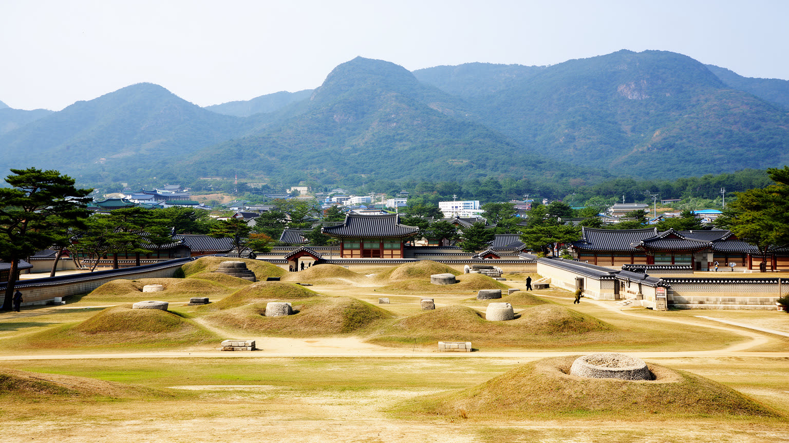
慶州を歩くと、都市の中心が近代的な高層街ではなく、月城、瞻星台、東宮と月池、大陵苑のような遺構で測られていることに気づきます。新羅の王都でした時間は、単なる観光説明ではなく、道路の曲がり方、建物の高さ、発掘の空地、夜間照明、祭礼の動線に残ります。古代国家の都は、王宮、寺院、市場、陵墓、山城を組み合わせた政治空間でした。現在の慶州では、その痕跡が市街地の中に点ではなく面として広がり、住民は文化財保護区域と生活道路の間で暮らします。遺跡があるために開発が制限される一方、その制限が街に低い空と歩ける余白を残します。王都の記憶は韓国史の正統性を示す資源であり、国内教育、国際交流、観光外交にも使われます。ただし古都の称号は、住民にとって常に利益だけをもたらすわけではありません。発掘や景観規制は土地利用を遅らせ、建て替えや商売の自由を狭めることがあります。慶州の地政学は、首都機能を持たない都市が、国家の古い正統性を可視化しながら、生活都市としての柔軟さをどう確保するかにあります。このため、慶州の中心は一つの商業核ではなく、過去の王都をめぐる複数の聖地と生活地の集合として理解する必要があります。王都を保存する制度が強いほど、行政、観光、学校教育、商店街、住宅政策は互いに切り離せなくなります。今も続きます。
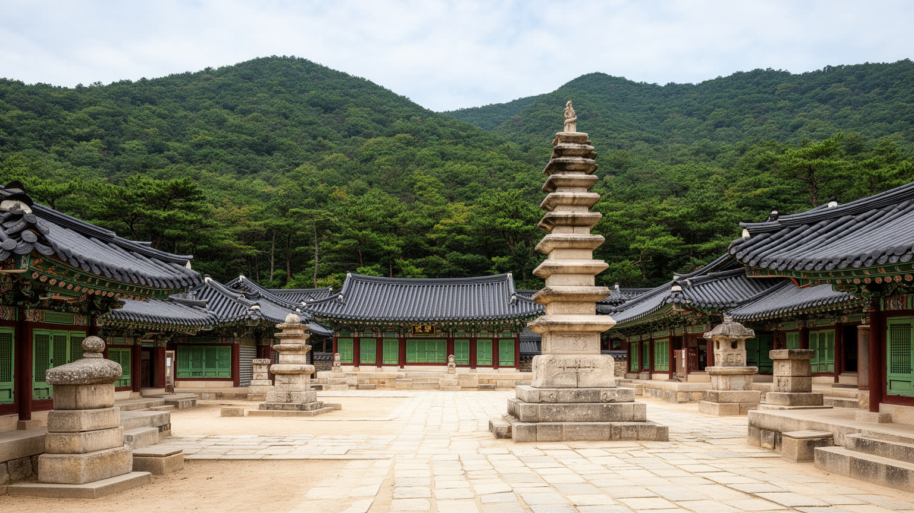
仏国寺と石窟庵は慶州観光の象徴ですが、ここで重要なのは建築の美しさだけではありません。新羅が仏教を国家の秩序と結びつけ、山、石、塔、伽藍、仏像を通じて政治と信仰を表現した事実です。寺院は観光地である前に、礼拝、修行、供養、年中行事の場であり、僧侶、信徒、文化財職員、案内人、清掃や交通の人々によって維持されます。南山の谷や尾根に残る磨崖仏や塔も、中心寺院とは違う密度で信仰の地図を作ります。観光客が短時間で見る仏像の背後には、保存環境、参拝の作法、雨風への対策、信仰対象としての尊厳があります。宗教施設が世界遺産になると、参拝者と観光客の動線、撮影、静けさ、修復費、商業化の距離を調整しなければなりません。祈りの場所を展示物のように扱いすぎれば、信仰の時間は薄くなります。一方で、多くの人に開かれることで維持費や教育効果も生まれます。慶州の仏教遺産を読むことは、宗教が過去の美術品へ固定されず、今も人の祈りと管理の手で支えられていることを見ることです。静かな堂塔の前で聞こえる足音や読経、ガイドの声は、信仰と観光が完全には分かれない慶州の現在をよく示します。宗教を尊重する案内、混雑の抑制、修復費の確保がそろって初めて、寺院は生きた場所であり続けます。季節の祈りも続きます。静けさが今も欠かせません。
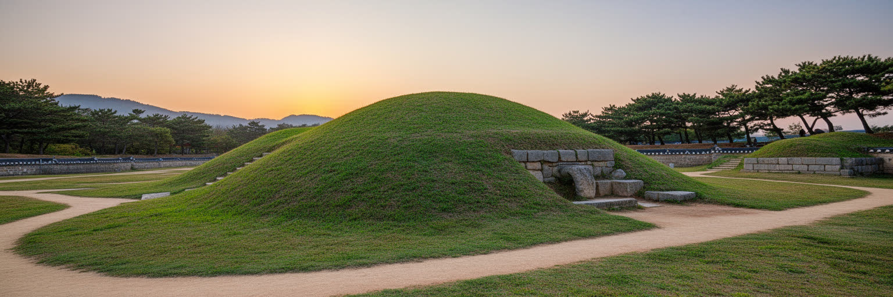
慶州の古墳群は、街の中に置かれた巨大な丘のように見えます。大陵苑や周辺の王陵は、権力者の墓であると同時に、都市景観を決める公共空間です。人々は古墳のそばを散歩し、写真を撮り、季節の花を眺めますが、その丸い地形は発掘、保護、解釈をめぐる慎重な作業の結果でもあります。墓は死者のための場所でありながら、現在の住民や観光客にとっては公園、記憶装置、都市の目印になります。金冠や副葬品が語る王権の華やかさだけでなく、誰が埋葬され、誰が労働し、どのように王都が秩序づけられたのかを想像する必要があります。古墳は開発しにくい空地でもあるため、都市の中に呼吸の余白を作ります。しかし、保護された緑地が多いことは、周辺住民にとって建築制限や交通集中を意味することもあります。夜間照明や散策路が整うほど、景観は美しくなりますが、遺構への踏圧や消費的な撮影も増えます。古墳が街の中心に残ることで、慶州では近代都市の速度が少し遅くなります。その遅さが、都市の価値であると同時に、生活と開発の調整を難しくする条件にもなります。丸い丘を避けて歩く経験は、死者の空間が現在の街路を形作ることを体で理解させます。墓を公園として親しむ感覚と、王陵として敬う距離感の両方を保てるかが、慶州らしい公共空間を決めます。今日も問われますね。
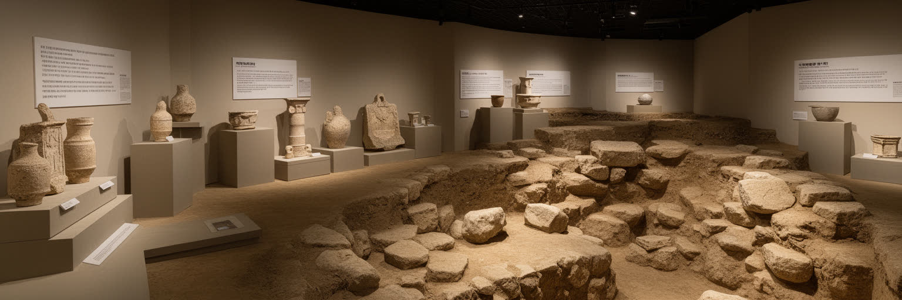
慶州では、地面の下が常に都市の現在を揺さぶります。道路工事や再開発、施設整備の前には発掘調査が必要になり、土器、瓦、建物跡、墓、溝が見つかれば計画は見直されます。考古学は学術の領域であると同時に、土地利用、観光、教育、住民生活を左右する都市行政の一部です。国立慶州博物館の展示は、金冠や仏教美術の美しさを伝えるだけでなく、発掘された物がどの地層から出て、どの時代の制度や交易を示すのかを読み解く入口になります。遺物はショーケースに入った瞬間に静かになりますが、本来は墓、寺院、工房、住居、港、道と結びついた生活の断片です。発掘現場で働く調査員、保存科学の専門家、記録を整える職員、展示を作る学芸員の仕事は、観光パンフレットでは見えにくい都市の基礎です。新しい発見は街の誇りになりますが、工事の遅れや費用負担を生むこともあります。慶州の博物館を見ることは、観光の確認作業ではなく、地面の下から都市像を組み直す作業です。発掘の成果が増えるほど、慶州は完成した古都ではなく、今も解釈が変わる都市として見えてきます。展示室の外で続く調査と保存を想像すると、博物館は過去の倉庫ではなく、都市計画を考えるための研究拠点になります。子どもや旅行者が展示を通じて発掘の過程を知るほど、保存への理解も日常に広がります。
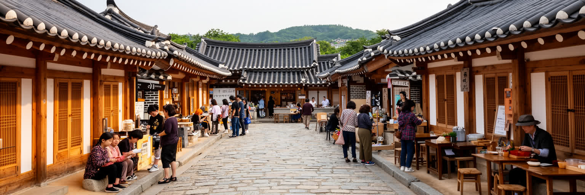
慶州の中心部では、古墳や寺院だけでなく、漢屋風の宿、食堂、カフェ、土産物店、住宅が観光の表情を作ります。黄理団キルのような地区は、古い街路と若い消費文化が交わる場所になり、週末には歩行者、車、写真撮影、行列が密集します。低い屋根と木の質感は歴史都市らしさを演出しますが、その裏側には家賃上昇、商業化、騒音、住民の生活動線の変化があります。漢屋は保存される対象であると同時に、住む、泊まる、働く、商うための現実の建物です。観光客にとって魅力的な路地が、住民には駐車、ゴミ、夜の音、日用品店の減少として経験されることもあります。若い店主や移住者が新しい仕事を作る一方、長く住んだ世帯が商業地化に戸惑う場面もあります。景観に合わせた改装は街の統一感を高めますが、似た外観の店が増えすぎると、生活の多様さは薄れます。慶州の日常を読むには、古風な外観の美しさだけでなく、そこに住む人が生活を続けられるかを見なければなりません。遺産都市の成熟は、景観を守りながら普通の暮らしを追い出さない調整力にかかっています。日常の買い物や通学、夜の静けさを守れるかどうかが、観光地としての魅力を長く保つ前提になります。外観だけを古く整えるのではなく、住民が使う店、診療所、バス停、公園が残ることも景観の一部です。大切ですね。
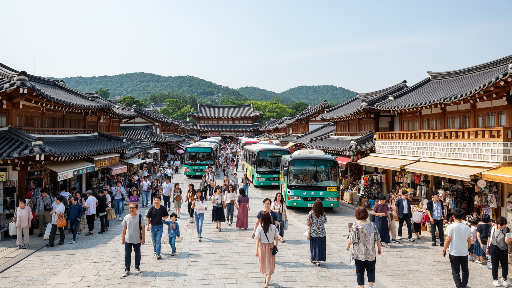
慶州の観光は、世界遺産、修学旅行、家族旅行、寺院参拝、歴史教育、写真映えする街歩きが重なって成り立ちます。観光は宿泊、飲食、交通、案内、清掃、文化財管理に仕事を作り、地域経済の重要な柱になります。一方で、訪問者が集中する季節や週末には、道路渋滞、駐車場不足、短時間滞在、店舗の観光化、住宅地への騒音が起きます。観光客は古都の静けさを求めますが、その静けさを保つには多くの現場労働と規制が必要です。文化財の保護は入場動線、照明、植栽、案内板、撮影マナー、ゴミ処理といった細部に現れます。滞在が短い団体旅行だけでは、地域に落ちる収益は限られ、混雑だけが残ることもあります。逆に長く泊まり、地元の食堂や工房を使う旅は、都市の理解を深めます。観光が成功するほど、街は外からの期待に合わせて変わり、住民の日用品や子どもの通学路が後回しになる危険もあります。慶州を見るときは、来訪者数だけでなく、滞在の質、収益の地域還元、住民の生活負担、文化財への圧力を同時に読む必要があります。観光の管理は訪問者を減らす話ではなく、歩く道、休む場所、働く人の条件を整え、街を使い続けられる形にする話です。宿泊が分散し、案内が多言語化し、地元の店に利益が回るほど、観光は負担だけでなく学びの循環になります。地域で試されますよね。
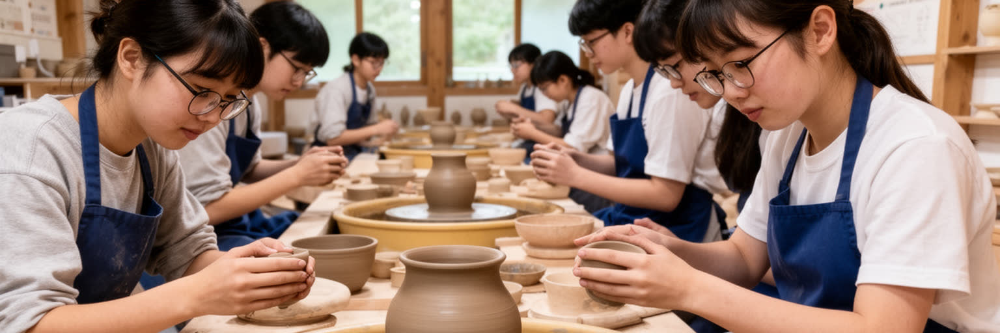
慶州の文化は、遺跡として保存されるだけでは続きません。大学、博物館、研究所、文化財修理の現場、工芸工房、学校教育、地域の祭礼が、知識と技術を次の世代へ渡しています。石、瓦、木工、金工、陶器、仏像、韓紙、茶、伝統音楽のような分野は、観光商品として見られがちですが、実際には長い訓練と材料の理解、地域の歴史への敬意を必要とします。学生や若い作り手にとって、慶州は古代を学ぶ場所であると同時に、地方都市で仕事を作れるかを試す場所でもあります。文化財の修復には高度な専門性が求められ、派手な展示より地味な観察、記録、測量、洗浄、補修が重要になります。修理の技術は、十分な発注と後継者がいなければ途切れます。学校で地域史を学ぶこと、博物館で本物に触れること、工房が観光客だけでなく住民にも開かれることが、都市の文化を厚くします。教育と工芸を読むことで、慶州の遺産は過去から来た完成品ではなく、手を動かす人々によって維持される公共財だと分かります。文化都市の基盤は、観光消費よりも学び続ける人の層にあります。手仕事を学ぶ場所が残るほど、慶州は記念写真の都市ではなく、修理しながら受け継ぐ都市として強くなります。若い担い手が地域で暮らせる住まいと収入を得られるかも、文化継承の現実的な条件です。今後にも大切ですね。
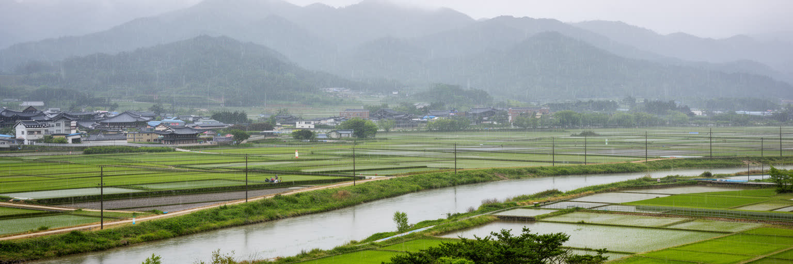
慶州は孤立した古都ではなく、浦項、蔚山、大邱、釜山へ向かう広域交通の中にあります。高速鉄道駅、幹線道路、バスターミナル、観光シャトル、東海岸方面の道路は、住民の通勤と観光客の移動を同時に扱います。浦項の鉄鋼、蔚山の自動車・造船・石油化学、大邱の都市サービスと大学が近いことは、慶州の産業や労働にも影響します。行政区域は広く、中心市街、仏国寺方面、良洞村、感浦の海岸、工業団地、農村部を一つの交通体系で結ぶ必要があります。観光客には短い移動に見えても、住民にとっては病院、学校、職場、買い物へ届く公共交通が生活の質を決めます。車に依存しすぎると、高齢者や若者、旅行者には使いにくい都市になります。遺産地区では駐車場を増やせば景観と歩行環境が損なわれ、車を制限しすぎれば郊外や農村部の住民が不便になります。鉄道駅から中心部、寺院、海岸を結ぶ分かりやすい移動は、観光の質だけでなく地域の公平性にも関わります。慶州の交通を読むことは、古墳を巡るルートだけでなく、広域産業圏と日常生活をどう結び、文化財地区に過度な車を入れないかを考えることです。広域の位置を生かすほど、慶州は観光だけに頼らず、工業、教育、農水産、文化を結ぶ中間都市として働きます。移動の設計は、来訪者の便利さと、郊外に住む人の通院や通学を同時に支える必要があります。

慶州の景観は、盆地の市街地、南山や吐含山の山並み、東海岸、農地、河川でできています。気候は比較的温暖ですが、夏の雨、台風、冬の乾燥、山地の冷え込み、海風が生活と観光に影響します。古墳の草地、寺院の石段、山中の仏跡、海岸の集落は、それぞれ違う気象条件にさらされ、保存管理の方法も変わります。大雨は土砂災害や遺構の排水を気にさせ、猛暑は屋外観光、祭礼、作業員、高齢者に負担をかけます。農村部では米、野菜、果樹、畜産、水産が季節のリズムを作り、観光地の食もその周辺の生産に支えられます。気候と景観を読むと、慶州の美しさが単なる背景ではなく、保存、農業、防災、観光の条件であることが見えてきます。山林の管理、河川の排水、海岸の防災、文化財地区の日陰づくりは、別々の政策ではありません。屋外を歩く観光が多い都市ほど、暑さを避ける休憩場所や水、案内の分かりやすさも重要になります。山と海を持つ広い都市であるため、中心部だけを見て慶州を理解することはできません。遺産都市の未来には、文化財保護と気候適応を同じ計画の中で扱う視点が必要です。季節の変化を細かく見るほど、遺産は石や土だけでなく、水、草、風、人の体調と結びつくことが分かります。暑さを避ける木陰、豪雨時の排水、山火事への備えは、景観保全と同じ都市政策です。
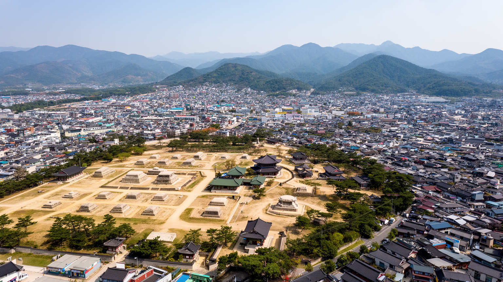
慶州は、世界的な大都市ではありません。しかし都市を読むうえで重要なのは、規模ではなく、どれほど多層の記憶と現在の生活を同時に抱えるかです。新羅王都、仏教遺産、王陵、博物館、漢屋の路地、観光商業、大学、農村、海岸、工業、原子力関連施設が一つの行政区域に入り、訪問者の想像する古都と住民の使う地方都市が重なります。慶州の価値は、過去をきれいに展示することだけにありません。発掘によって解釈が変わり、観光によって街路が変わり、気候によって保存方法が変わり、人口構造によって公共サービスが変わる、その変化を引き受ける点にあります。人口減少と高齢化、若者の就職先、観光の季節変動、文化財規制、住宅と商業のバランス、公共交通、農村部の維持は、古都の美しいイメージの下にある現実です。古墳の曲線や寺院の石は静かに見えますが、その静けさは制度、労働、信仰、教育、住民の我慢によって作られます。慶州を現在の都市として読むと、遺産とは過去の所有物ではなく、未来の暮らしをどう設計するかを問う公共の課題ですと分かります。保存を守る制度と、住民が将来を選べる余地を両立できるかが、慶州を古都以上の都市にします。観光客が去った後にも働き、学び、老い、祈る人がいることを前提に読めば、慶州の価値はさらに立体的になります。次世代にも続きます。